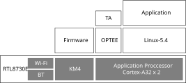
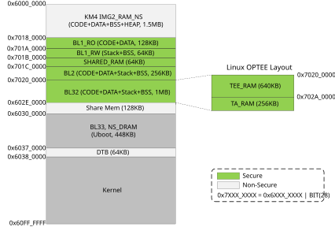
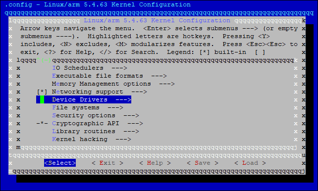
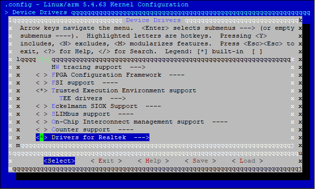
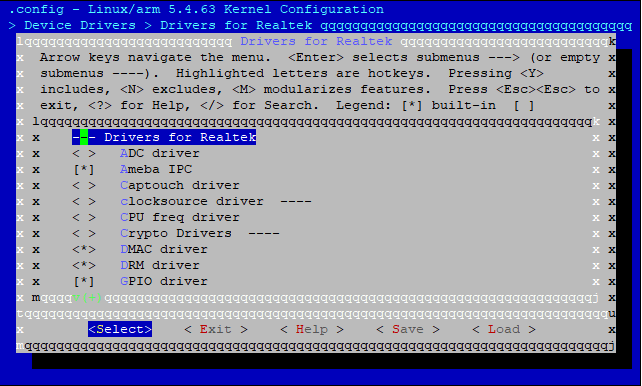

概览
Realtek 的 Linux SDK 架构如下所示。
Linux 软件: 在应用处理器（AP）上运行。它包含多个组件层，提供不同级别的接口，以帮助用户运行自己的应用程序。
OPTEE OS: 在 Arm TrustZone 上运行以提供安全功能。
Firmware: 在 KM4 上运行，可提供任务卸载和低功耗操作。
{kind=link}

SDK 路径
下面展示了 Realtek 的 Linux SDK 目录架构。
{kind=link}
路径 |
组件 |
描述 |
|---|---|---|
sources/boot |
Bootloader |
引导加载程序包含了 arm-trusted-firmware、OPTEE OS 和 u-boot |
sources/development |
Development tools |
用于调试的开发工具 |
sources/kernel |
Linux kernel |
Linux 内核 5.4 |
sources/firmware |
KM4 firmware |
运行在 KM4 的 firmware |
sources/yocto |
Yocto |
Yocto 4.0 Kirkstone |
sources/tests |
Test cases |
驱动的测试样例 |
Tools |
Tools |
Flash 下载与测试工具 |
BSP
该 SDK 提供了一系列 BSP 源代码包。
路径 |
组件 |
描述 |
|---|---|---|
sources/<linux> |
Linux Kernel |
Linux 内核源代码 |
sources/boot/arm-trusted-firmware |
Trusted Firmware |
Arm trusted firmware |
sources/boot/uboot |
U-Boot |
应用处理器的第二引导加载程序 |
sources/boot/optee |
Trusted OS |
OPTEE OS 作为可信操作系统运行，以提供安全功能。 |
其中 <linux> 表示 sdk 中的内核 linux 目录，对于内核5.4.x而言是 kernel/linux-5.4 ，而对于内核6.6.x则是 kernel/linux-6.6 。
闪存布局
NAND 闪存布局
在 SDK 中提供了两种默认的 NAND 闪存布局。
下表展示了 128MB NAND 闪存的布局。SlotA KM4 引导加载程序的起始地址固定为 0x0800_0000 ，其他起始地址可由用户配置。
项
子项
地址
大小（字节）
描述
KM0/KM4/AP BOOT SlotA
KM4 Bootloader
0x0800_0000
24K
KM4 引导加载程序代码/数据
System Data
0x0801_F000
4K
系统数据
Key Certificate, KM0 & KM4 IMG2
0x0802_0000
1152K
该固件结合了密钥证书、KM0 固件和 KM4 固件2。
密钥证书：其他固件的公钥哈希信息
KM0_IMG: 包含 KM0 固件代码/数据，映射到虚拟地址0x0C00_0000。
KM4_IMG2: 包含 KM4 非安全固件代码/数据，映射到虚拟地址0x0E00_0000。
AP BL1 & FIP
0x0814_0000
1536K
AP BL1 和 FIP 固件，包含 BL1，BL2，BL32 (OPTEE) 与 BL33 (U-Boot)
KM0/KM4/AP BOOT SlotB[1]
KM4 Bootloader
0x082C_0000
256K
与 SlotA 一样。
Key Certificate, KM0 & KM4 IMG2
0x0830_0000
1152K
与 SlotA 一样。
AP BL1 & FIP
0x0842_0000
1536K
与 SlotA 一样。
A: AP Misc
0x0862_0000
256K
SlotA: 用户恢复的 AP 杂项信息
B: AP Misc Backup
0x0866_0000
256K
SlotB: 用户恢复的 AP 杂项信息的备份
A: AP VBMeta
0x086A_0000
256K
SlotA: 用于安全启动的 AP VBMeta 信息
B: AP VBMeta
0x086E_0000
256K
SlotB: AP VBMeta 当前用于恢复安全启动
A: AP DTB
0x0872_0000
384K
SlotA: AP 设备树二进制文件
B: AP DTB
0x0878_0000
384K
SlotB: 目前用于 AP 恢复的设备树 Blob
A: AP Kernel
0x087E_0000
10M
SlotA: AP Linux 内核固件
B: AP Kernel
0x091E_0000
10M
SlotB: 目前用于 AP 恢复的内核和 initramfs
AP Rootfs
0x09BE_0000
60M
AP 根文件系统二进制文件
AP Userdata
0x0D7E_0000
40.125M
AP UBIFS 用户数据二进制文件
备注
[1] SlotB 是给 OTA 在线升级使用的。
下表展示了 256MB NAND 闪存的布局。SlotA KM4 引导加载程序的起始地址固定为 0x0800_0000 ，其他起始地址可由用户配置。
项
子项
地址
大小（字节）
描述
KM0/KM4/AP BOOT SlotA
KM4 Bootloader
0x0800_0000
24K
KM4 引导加载程序代码/数据
System Data
0x0801_F000
4K
系统数据
Key Certificate, KM0 & KM4 IMG2
0x0802_0000
1152K
该固件结合了密钥证书、KM0 固件和 KM4 固件2。
密钥证书：其他固件的公钥哈希信息
KM0_IMG: 包含 KM0 固件代码/数据，映射到虚拟地址0x0C00_0000。
KM4_IMG2: 包含 KM4 非安全固件代码/数据，映射到虚拟地址0x0E00_0000。
AP BL1 & FIP
0x0814_0000
1536K
AP BL1 和 FIP 固件，包含 BL1，BL2，BL32 (OPTEE) 与 BL33 (U-Boot)
KM0/KM4/AP BOOT SlotB
KM4 Bootloader
0x082C_0000
256K
与 SlotA 一样。
Key Certificate, KM0 & KM4 IMG2
0x0830_0000
1152K
与 SlotA 一样。
AP BL1 & FIP
0x0842_0000
1536K
与 SlotA 一样。
A: AP Misc
0x0862_0000
256K
SlotA: 用户恢复的 AP 杂项信息
B: AP Misc Backup
0x0866_0000
256K
SlotB: 用户恢复的 AP 杂项信息的备份
A: AP VBMeta
0x086A_0000
256K
SlotA: 用于安全启动的 AP Meta 信息
B: AP VBMeta
0x086E_0000
256K
SlotB: AP Meta 当前用于恢复安全启动
A: AP DTB
0x0872_0000
384K
SlotA: AP 设备树二进制文件
B: AP DTB
0x0878_0000
384K
SlotB: 目前用于 AP 恢复的设备树 Blob
A: AP Kernel
0x087E_0000
15M
SlotA: AP Linux 内核固件
B: AP Kernel
0x096E_0000
15M
SlotB: 目前用于 AP 恢复的内核和 initramfs
AP Rootfs
0x0A5E_0000
120M
AP 根文件系统二进制文件
AP Userdata
0x11DE_0000
98.125M
AP UBIFS 用户数据二进制文件
自定义的 NAND 山村布局
根据需要更改特定 Linux 设备树文件中的闪存布局。
128MB NAND 闪存： <linux>/arch/arm/boot/dts/rtl8730e-spi-nand-128m.dtsi
256MB NAND 闪存： <linux>/arch/arm/boot/dts/rtl8730e-spi-nand-256m.dtsi
根据需要更改分区节点的 reg 和/或 label 属性：
partitions {
compatible = "fixed-partitions";
#address-cells = <1>;
#size-cells = <1>;
partition@0 {
label = "Miscellaneous Information"; # Partition name
reg = <0x620000 0x40000>; # <offset size>
};
# More partitions
};
chosen {
bootargs = "console=ttyS0,1500000 earlycon psci=enable ubi.mtd=8 ubi.block=0,0 root=/dev/ubiblock0_0 rootfstype=squashfs,ubifs ubi.mtd=9";
stdout-path = &loguart;
};
备注
分区偏移应与其地址相对应： offset | 0x0800_0000 = address
NAND 闪存的分区偏移和大小应与 NAND 块大小对齐，例如，对于大多数 SPI NAND 闪存型号通常为 128KB，并且每个分区应至少保留一个块大小用于坏块管理。
如果没有必要，请不要更改默认分区的顺序；否则，bootargs 中的 rootfs 和 userdata 路径也应相应更改。
根据需要更改 U-Boot 配置。
在 <sdk>/sources/boot/uboot/configs 下找到特定板卡的默认U-Boot配置文件，例如， rtl8730elh-va7 板卡对应的配置文件为 rtl8730elh-va7_defconfig 。可用的闪存布局配置如下所示。
项 |
U-Boot 配置 |
|---|---|
AP 内核起始地址 |
CONFIG_IMG_FLASH_ADDR |
AP 内核大小 |
CONFIG_IMG_FLASH_SIZE |
AP DTB 起始地址（仅适用于 NOR Flash） |
CONFIG_FDT_FLASH_ADDR |
AP DTB 大小 |
CONFIG_FDT_FLASH_SIZE |
AP Misc 起始地址 （仅适用于 NOR Flash） |
CONFIG_BOOT_OPTION_MISC_FLASH_ADDR |
AP Misc 大小 （仅适用于 NOR Flash） |
CONFIG_BOOT_OPTION_MISC_FLASH_SIZE |
用于恢复的 AP DTB 起始地址（仅适用于 NOR Flash） |
CONFIG_RECOVERY_FDT_FLASH_ADDR |
用于恢复的 AP DTB 大小 |
CONFIG_RECOVERY_FDT_FLASH_SIZE |
用于恢复的 AP 内核 + 根文件系统的起始地址（仅适用于 NOR Flash） |
CONFIG_RECOVERY_IMG_FLASH_ADDR |
用于恢复的 AP 内核 + 根文件系统大小 |
CONFIG_RECOVERY_IMG_FLASH_SIZE |
由 mtdparts 定义的分区信息（仅适用于 NAND Flash） |
CONFIG_MTDPARTS_DEFAULT |
小心
请勿重命名在 CONFIG_MTDPARTS_DEFAULT 中定义的分区。
重新编译固件。
请通过设备配置文件编辑器相应地更改设备配置文件中的闪存布局。
DRAM 布局
以 16MB DRAM 为例，其布局如下面的图所示。
{kind=link}

项 |
子项 |
物理地址 |
大小（字节） |
描述 |
|---|---|---|---|---|
KM4 IMG2 |
KM4_IMG2_RAM_NS |
0x6000_0000 |
1.5M |
KM4 固件2 SRAM，包括CODE、DATA、BSS和HEAP。 |
AP IMG |
BL1_RO |
0x6018_0000 |
128K |
AP BL1 代码与 RO 数据 |
BL1_RW |
0x601A_0000 |
64K |
AP BL1 栈和 BSS |
|
SHARED_RAM |
0x601B_0000 |
64K |
用于多核的 AP 共享内存 |
|
BL2 |
0x601C_0000 |
256K |
AP BL2 代码，数据，栈，BSS |
|
BL32 |
0x6020_0000 |
1M |
AP BL32 代码，数据，栈，BSS 对于 Linux SDK，BL32 是 OPTEE，它包含了 TEE_RAM、TA_RAM 和共享内存。 |
|
BL33 |
0x6030_0000 |
448K |
AP BL33 代码，数据，栈，BSS 对于 Linux SDK, BL33 是 U-Boot |
|
DTB |
0x6037_0000 |
64K |
AP 设备树二进制文件 |
|
Kernel |
0x6038_0000 |
- |
AP Linux 内核固件 |
U-Boot
目录
U-Boot 代码路径： <sdk>/sources/boot/uboot
在接下来的章节中， <uboot> 将被用作上述路径的简写。
项 |
路径 |
|---|---|
Platform-specific 代码 |
<uboot>/board/realtek/amebasmart/ |
默认配置文件 |
<uboot>/configs/ |
设备树文件 |
<uboot>/arch/arm/dts/ |
外设驱动程序 |
<uboot>/uboot/drivers/rtkdrivers/ |
设备树-bindings |
<uboot>/include/dt-bindings/realtek/ |
自定义命令 |
<uboot>/cmd/ |
设备树
U-Boot 的设备树文件与不同的开发板相对应，差异仅在于芯片和闪存布局等方面。
板级设备树文件的命名规则是：
<SoC>-uboot-<Flash>.dts
其中：
- SoC:
SoC 的 RTL 编号，例如 rtl8730e。
- Flash:
闪存类型，例如 NAND 或 NOR。
例如，使用 NAND 闪存的所有 RTL8730E 开发板对应的文件命名为 rtl8730e-uboot-nand.dts 。
与 Linux 内核的设备树文件不同，U-Boot 的设备树文件经过精简，仅提供用于启动 Linux 内核的最低限度的平台特定支持。
项 |
U-Boot 的设备树 |
Linux 内核设备树 |
|---|---|---|
DTB 存在性 |
与 U-Boot 固件组合 |
独立固件 |
运行时间配置（可选） |
标准输出路径 |
bootargs，标准输出路径 |
CPU （cpus） |
否（仅限Core 0，已在默认配置文件中指定） |
是 （Core 0 + Core 1） |
内存 （memory） |
固定到 64MB |
64/128/256MB （不同的板子不同设置） |
闪存分区 （partitions） |
否 （在默认配置文件中指定） |
是（不同的板子不同设置） |
外设 |
最小支持 （LOGUART/SPIC/Flash/USB/OTP） |
全部支持 |
驱动
U-Boot 提供了用于最小外设的驱动程序，其唯一目的就是引导 Linux 内核。
驱动 |
源代码 |
描述 |
|---|---|---|
LOGUART |
drivers/rtkdrivers/serial/ |
用于记录日志和 USB 启动操作的控制台 |
OTP |
drivers/rtkdrivers/otp/ |
OTP 驱动程序用于在安全启动期间访问防回滚索引。 |
SPIC |
drivers/rtkdrivers/spi/ |
SPIC 驱动程序用于访问 SPI NAND/NOR 闪存。 |
USB |
drivers/rtkdrivers/phy/ drivers/usb/ |
用于 USB 启动的 USB PHY 和 HCD 驱动程序。 |
NAND Flash |
drivers/mtd/nand/spi/ |
SPI NAND 闪存驱动 |
NOR Flash |
drivers/mtd/spi-nor/ |
SPI NOR 闪存驱动 |
Linux 内核
目录
Linux 内核代码路径： <sdk>/sources/kernel/linux-<version>
在接下来的章节中， <linux> 将被用作上述路径的简写。
项 |
路径 |
|---|---|
Platform-specific 代码 |
<linux>/arch/arm/mach-amebasmart/ |
默认配置文件 |
<linux>/arch/arm/configs/ |
设备树文件 |
<linux>/arch/arm/boot/dts/ |
外设驱动 |
<linux>/drivers/rtkdrivers/ |
音频驱动 |
<linux>/sound/soc/realtek/ <linux>/sound/soc/codecs/ |
设备树-bindings |
<linux>/include/dt-bindings/realtek/ |
备注
在下面的章节中， <dts> 会用来表示 Linux 设备树文件的路径。
设备树
Linux 内核的设备树文件分为三个层级进行组织：
板级
与不同的板对应，可能在芯片、DRAM、闪存布局、启动参数、引脚复用等方面有所不同。
板级设备树文件的命名规则是：
<SoC>-<Feature>.dts
其中：
SoC: SoC 模组名，例如 rtl8730elh-va7, rtl8730elh-va8
特性:
full： 最多功能用于开发和演示。
generic：最少功能用于客户设计参考
recovery：用于恢复的最低功能
tests-xxx：用于质量控制测试的功能
例如，
rtl8730elh-va8-generic.dts是用于 rtl8730elh-va8 板子的，提供最少功能用于客户设计。板级设备树可以覆盖芯片级设备树配置。
芯片级
对应不同的芯片，在CPU和外设上有所不同。
例如，
rtl8730e.dts是用于 RTL8730E SoC 的。IP 级
对应通用的片上模块，例如：
rtl8730e-a32.dtsi：Cortex-A32的CPU配置。rtl8730e-spi-nand-128m.dtsi：SPI 闪存控制器、128MB NAND 闪存默认布局和运行时配置。rtl8730e-spi-nand-256m.dtsi：SPI闪存控制器、256MB NAND闪存默认布局和运行时配置。rtl8730e-audio.dtsi:音频配置。rtl8730e-captouch.dtsi：电容触控配置。rtl8730e-drm.dtsi：DRM 配置。rtl8730e-ocp.dtsi：片上外设配置，包括rtl8730e-audio.dtsi、rtl8730e-rcc.dtsi和rtl8730e-pinctrl.dtsi。rtl8730e-pinctrl.dtsi：Pinmux 配置。rtl8730e-rcc.dtsi：时钟配置。
驱动
Linux 内核为片上外设的驱动程序提供全面支持。
驱动 |
源代码 |
描述 |
|---|---|---|
ADC |
drivers/rtkdrivers/adc/ |
用于 ADC 的 IIO 驱动程序 |
音频 |
sound/soc/realtek/ sound/soc/codecs/ameba*.c |
音频编解码器/平台/机器驱动程序 |
蓝牙 |
drivers/bluetooth/ drivers/rtkdrivers/misc/ |
蓝牙控制器电源驱动程序和 HCI 驱动程序 |
电容触控 |
drivers/rtkdrivers/touchscreen/ |
电容触控控制器驱动程序 |
时钟 |
drivers/rtkdrivers/clk/ |
RCC（复位和时钟控制）模块的驱动程序 |
CPUFREQ |
drivers/rtkdrivers/cpufreq/ |
CPU 频率和电压调节驱动程序 |
Crypto |
drivers/rtkdrivers/crypto/ |
硬件加密引擎驱动程序 |
DMAC |
drivers/rtkdrivers/dma/ |
DMA 控制器驱动程序 |
DM-Verity |
drivers/md/ |
用于安全启动的 DM 验证驱动程序 |
DRM |
drivers/rtkdrivers/drm/ |
LCDC 和 MIPI-DSI 驱动程序 |
GIC |
drivers/irqchip/ |
GIC 驱动程序 |
GPIO |
drivers/rtkdrivers/gpio/ |
GPIO 驱动程序 |
I2C |
drivers/rtkdrivers/i2c/ |
I2C 主机/从机驱动程序 |
IPC |
drivers/rtkdrivers/ipc/ |
IPC 驱动程序 |
IR |
drivers/rtkdrivers/ir/ |
IR 远程控制驱动程序 |
LEDC |
drivers/rtkdrivers/ledc/ |
特定于 WS28XXX 的 LEDC 驱动程序 |
LOGUART |
drivers/rtkdrivers/tty_serial/ |
用于控制台的 LOGUART 驱动程序 |
NAND 闪存 |
drivers/mtd/nand/spi/ |
SPI NAND 闪存驱动程序 |
NOR 闪存 |
drivers/mtd/spi-nor/ |
SPI NOR 闪存驱动程序 |
OTP |
drivers/rtkdrivers/otp/ |
OTP 驱动程序 |
PINCTRL |
drivers/rtkdrivers/pinctrl/ |
PIN 控制器驱动程序 |
RTC |
drivers/rtkdrivers/rtc/ |
RTC 驱动程序 |
SDIOH |
drivers/rtkdrivers/mmc/ |
SDIO 主机驱动程序 |
SPI |
drivers/rtkdrivers/spi/ |
通用 SPI 控制器驱动程序 |
SPIC |
drivers/rtkdrivers/spic/ |
SPI 闪存控制器驱动程序 |
系统定时器 |
drivers/clocksource/arm_arch_timer.c |
系统定时器驱动程序 |
Thermal |
drivers/rtkdrivers/thermal/ |
温控驱动程序 |
定时器 |
drivers/rtkdrivers/clocksource/ drivers/rtkdrivers/mfd_timer/ drivers/rtkdrivers/pwm/ |
用于定时器模块的时钟源/ MFD / PWM 驱动程序 |
UART |
drivers/rtkdrivers/tty_serial/ |
通用 UART 驱动程序 |
USB |
drivers/rtkdrivers/usb_phy/ drivers/usb/ |
USB PHY /控制器/类驱动程序 |
看门狗 |
drivers/rtkdrivers/watchdog/ |
看门狗驱动程序 |
Wi-Fi |
drivers/rtkdrivers/net/ |
Wi-Fi 驱动程序 |
配置
要更改内核配置，请执行以下命令：
bitbake virtual/kernel -c menuconfig
以下是更改外围设备驱动程序配置的示例：
选择 。


根据需要配置外围设备驱动程序。

{kind=link}
{kind=link}
{kind=link}
后面的章节将详细说明Realtek外围设备驱动程序的配置。